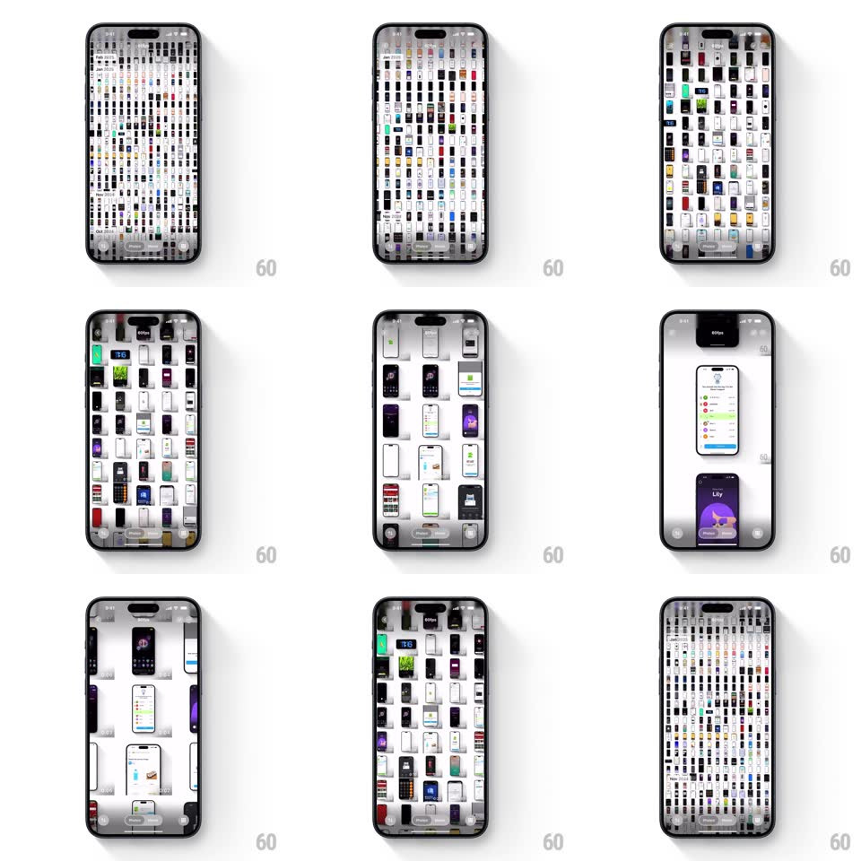

Media
Frame-by-frame

Rebuild this interaction 1:1: Apple Photos pinch-to-zoom - a gesture that morphs the library through grid densities (years to months to days) and into a single-photo view, fully continuous with the pinch.

Rebuild this interaction 1:1: Apple Photos pinch-to-zoom - a gesture that morphs the library through grid densities (years to months to days) and into a single-photo view, fully continuous with the pinch. ## Integration Integration: stack-agnostic spec - springs given as stiffness/damping, timed motions as duration + curve; map every value to your framework and animation library of choice. ## Scene A photo library: hundreds of tiny thumbnails in a dense grid over a dark scrim, a "60fps" pill at top in the wide view; zooming crosses grid densities until two large photos fill the screen; pinching back out returns to the dense grid. ## Motion spec Pattern: continuous gesture-driven grid zoom. - Zoom in: the pinch drives a crossfade-scale between discrete density levels - tiny (~12 columns) -> medium (~6) -> large (~3) -> single item. Each level interpolates cell size and opacity (crossfade window ~40% of the pinch range). - Cells near the pinch centroid scale slightly ahead of the rest (10% lead) so the zoom feels anchored to the fingers. - Single-item view: the last zoom fades the grid (200ms) as the focused photo scales to full width with a second photo below (scrollable stack). - Zoom out reverses the same path with the same continuity; release mid-range springs to the nearest density (spring ~300/24, 250ms). - No bounce at the dense end - the grid clamps. ## Calibration - The gesture is 1:1 with scale between levels - never time-based. - The pinch centroid stays fixed on screen: the content under the fingers does not drift. ## Reduced motion Keep the gesture mapping; remove the cell-lead effect. ## Don't miss - Density changes are crossfades between live grids, not relayouts. - Mid-pinch release snaps to the nearest level.